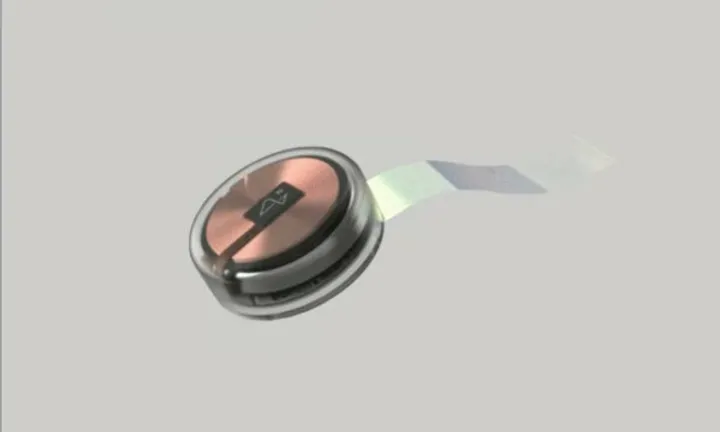
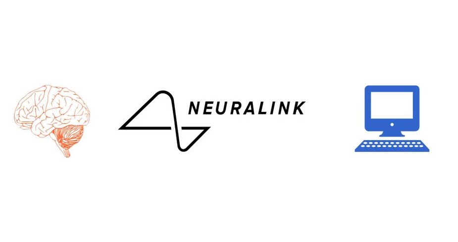

Imagine a world where you could instantly download new skills, like Neo from The Matrix.
What if you could become a superhero like Vision from The Avengers or Cyborg from Justice League?
What if you could control devices—music players, phones, or even computers—just by thinking? Or even upload and download your mind to a computer?
All this may seem like something out of a sci-fi movie, but it could soon become reality. Elon Musk and his team at Neuralink, a cutting-edge brain-machine interface company, are working on directly connecting the human brain to computers.
Human Brain in a Nutshell
Carl Sagan once said, "The brain is a very big space in a small space."
The human brain contains approximately 86 billion neurons, tiny cells ranging from 4 to 100 microns wide. Neurons transmit information through connections known as synapses. Synapses are the junctions where neurons communicate via chemical signals called neurotransmitters. Every sensation, action, and thought is the result of electrical signals generated by neurons through a process known as action potential.
Neuralink: A "Fitbit in Your Skull"
As Elon Musk describes it, Neuralink is like a "Fitbit in your skull with tiny wires." The device is a small, coin-sized chip measuring about 8mm in diameter. It contains numerous electrodes that are 1/20th the thickness of a human hair, attached to ultra-thin threads. These electrodes are inserted into the brain with the help of a precision robotic system, capable of implanting six threads per minute. In the future, as many as 10,000 electrodes could be connected to individual neurons.

How Neuralink Works
A small piece of the skull is removed to implant the Neuralink chip. Electrodes are placed in contact with neurons, and when neurotransmission occurs, the electrodes record the electric signals (action potentials) and transform them into a computer-readable format using algorithms. These recordings help researchers understand brain function.

The electrodes can also transfer data from external computers to the human brain, potentially allowing damaged neuron connections to be repaired and reused.
Why Neuralink Matters
Neuralink is groundbreaking because it can implant significantly more electrodes than existing brain-machine interfaces, vastly expanding its potential applications. The interface could restore vision for the blind, enable paralyzed individuals to walk, and help the deaf hear again. Neuralink may also unlock new treatments for complex conditions like depression, anxiety, and insomnia.
Possible Future with Neuralink
According to Elon Musk, Neuralink might one day be able to save and replay dreams. Other potential applications include telepathic communication, advanced gaming, and even merging humans with artificial intelligence.
References
- Neuralink Live Demonstration
- The Great Courses Daily - The Theory of Everything
- Lex Fridman: The Future of Neuralink
- BBC News
- Exploring Mind
- Interesting Engineering: How Neuralink works